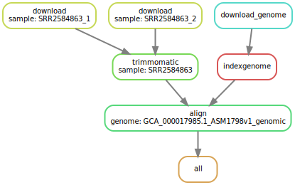
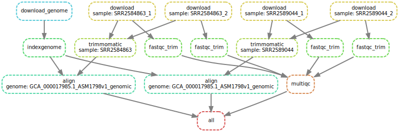

Make & Snakemake
 Helena Rasche
Helena Rasche Bazante Sanders
Bazante Sanders Donny Vrins
Donny Vrins Avans Hogeschool
Avans HogeschoolOverview
Questions:Objectives:
What is Make & Snakemake
What is a Makefile/Snakefile
How do these improve pipelines over simple scripts?
Why is Snakemake better for scientific research and how can I use it
How do I use conda envs with Snakemake?
Requirements:
Write a snakefile that does a simple QC and Mapping workflow
- Foundations of Data Science
- CLI basics: tutorial hands-on
- Advanced CLI in Galaxy: tutorial hands-on
Time estimation: 3 hoursLevel: Intermediate IntermediateSupporting Materials:Last modification: Dec 14, 2021
 Questions:
Questions:
Here you will learn to write both Make and Snakemake workflows. We teach two workflow engines because Snakemake uses a lot of the concepts of Make, and these concepts are somewhat complex and a very different way of thinking than you might be used to with workflow design.
This tutorial is aimed at students and Galaxy community members who might want to convert Snakemake workflows into Galaxy workflows, but need to understand how Snakemake workflows work.
Agenda
In this tutorial, we will cover:
We’re going to go through this tutorial as “the evolution of a pipeline” from a simple bash script that we might run as individual commands on the command line, all the way up to a Snakemake workflow. This should give you some perspective of why the systems exist, and what benefits each system brings.
Bash
We’ve set up a simple bash pipeline. It downloads some read files from a website, decompresses them, builds an index for a genome.fa we already have, and then does the alignment against that genome.
# Downloading our datasets
wget https://zenodo.org/record/5562251/files/GCA_000017985.1_ASM1798v1_genomic.fna.gz
wget https://zenodo.org/record/5562251/files/SRR2584866_1.fq.gz
wget https://zenodo.org/record/5562251/files/SRR2584866_2.fq.gz
wget https://zenodo.org/record/5562251/files/SRR2589044_1.fq.gz
wget https://zenodo.org/record/5562251/files/SRR2589044_2.fq.gz
# Generate FastQC Report
fastqc *.fq
# Run Trimmomatic to trim the bad reads out.
trimmomatic PE SRR2589044_1.fq.gz SRR2589044_2.fq.gz \
SRR2589044_1.trim.fq SRR2589044_1un.trim.fq \
SRR2589044_2.trim.fq SRR2589044_2un.trim.fq \
SLIDINGWINDOW:4:20 MINLEN:25 ILLUMINACLIP:NexteraPE-PE.fa:2:40:15
trimmomatic PE SRR2584866_1.fq.gz SRR2589044_2.fq.gz \
SRR2584866_1.trim.fq SRR2589044_1un.trim.fq \
SRR2584866_2.trim.fq SRR2589044_2un.trim.fq \
SLIDINGWINDOW:4:20 MINLEN:25 ILLUMINACLIP:NexteraPE-PE.fa:2:40:15
# Generate Updated FastQC Report
fastqc *.trim.fq
# Generate the genome index
bwa index GCA_000017985.1_ASM1798v1_genomic.fna
# Align reads to the genome
bwa mem GCA_000017985.1_ASM1798v1_genomic.fna SRR2589044_1.trim.fq SRR2589044_2.trim.fq | samtools sort -O bam -o SRR2589044.bam
bwa mem GCA_000017985.1_ASM1798v1_genomic.fna SRR2584866_1.trim.fq SRR2584866_2.trim.fq | samtools sort -O bam -o SRR2584866.bam
This is a fine start to our analysis pipeline, and might simply be summarising the commands we executed interactively at the command line.
Make
Make is a build automation tool that has been around since 1976. It lets you describe build processes, writing down the individual processes which will occur, and then providing you a single entrypoint to run your workflow, a lot like how Scientific Workflow Management System (SciWMS) work! But importantly it is declarative, rather than imperative which is a big change if you’re familiar with programming languages like bash or python.
Instead of defining step by step all of the steps that should be executed like the bash example above, you instead write more general rules on how to produce individual files. We’ll look at them one-by-one.
In bash scripts you write something like:
command inputand it implicitly creates the output file automatically, often by adding a suffix (e.g.bwa index genome.faproduces an index you refer to withgenome)command input > outputredirecting output of the command to a filecommand input -O outputwhere we explicitly state where the output is
In Make you’ll need to do that, but you’ll also need to declare the inputs and outputs of every step!
output: input
command [and here the correct variant from above]
This may seem tedious, to annotate the inputs and outputs of each step, but because Make knows what input files need to exist before it can execute this step, and it knows precisely which output files you will generate. It needs this information so that when you have multiple rules, it can decide which dependencies need to be executed.
Line-By-Line Comparison
Downloading Data
code-in Bash
wget https://.../GCA_000017985.1_ASM1798v1_genomic.fna.gz wget https://.../SRR2584866_1.fq.gzWith bash we download each read file one by one
code-out Make
%.gz: wget https://.../$@ -O $@But with Make we write is a generic rule which can be used any time you need to download a file for this project.
$@is used as the name of the output file and in the templated source url we will download from. If you ranmake SRR2584866_1.fq.gzit would template out thewgetcommand and run it. Speed bonus: It can parallelise these download jobs for us!
FastQC
code-in Bash
fastqc *.fqGenerate ALL of the FastQC reports
code-out Make
%.fastqc.html: %.fq fastqc $<Here is a rule to generate a single FastQC report from a single FastQ file
Trimming Data
code-in Bash
trimmomatic PE SRR2589044_1.fq.gz SRR2589044_2.fq.gz \ SRR2589044_1.trim.fq SRR2589044_1un.trim.fq \ SRR2589044_2.trim.fq SRR2589044_2un.trim.fq \ SLIDINGWINDOW:4:20 MINLEN:25 ILLUMINACLIP:NexteraPE-PE.fa:2:40:15 trimmomatic PE SRR2584866_1.fq.gz SRR2584866_2.fq.gz \ SRR2584866_1.trim.fq SRR2584866_1un.trim.fq \ SRR2584866_2.trim.fq SRR2584866_2un.trim.fq \ SLIDINGWINDOW:4:20 MINLEN:25 ILLUMINACLIP:NexteraPE-PE.fa:2:40:15Run these two individual trimmomatic commands with these hardcoded filenames. If you need to run a new file make sure to carefully change all of the uses of it!
code-out Make
%_1.trim.fq %_2.trim.fq %_1un.trim.fq %_2un.trim.fq: %_1.fq.gz %_2.fq.gz trimmomatic PE $^ \ $(shell basename $(word 1,$^) .fq).trim.fq \ $(shell basename $(word 1,$^) .fq)un.trim.fq \ $(shell basename $(word 2,$^) .fq).trim.fq \ $(shell basename $(word 2,$^) .fq)un.trim.fq \ SLIDINGWINDOW:4:20 MINLEN:25 ILLUMINACLIP:NexteraPE-PE.fa:2:40:15A more generic rule to generate the trimmed fastq files from whichever pair of sequence identifiers were provided. By using
%we also get some safety in this function that we didn’t have in the bash version! We know for sure those are identical values, and no one accidentally made a small typo in any one of the 6 times the same identifier was repeated. But it comes at the cost of using some complex Make statements like$(shell)which lets us execute arbitrary shell commands inside our pipeline.You’ll notice that what we’re really doing is extracting the inputs and outputs from the command and making them much more uniform
So when we translated from Bash to Make, every time
- we annotated inputs
- we annotated outputs
- we made the command a ‘template’
comment DO NOT REMEMBER THIS
There is a lot of Make specific things going on in the above examples. You do not need to know it! We just wanted to provide working, correct examples. This tutorial is focused on Snakemake, so read these for context and understanding of why we use Snakemake, not reading them to learn Makefiles.
Why Make?
So now comes the question, why Make? Why would you want to write the rules in this declarative way, rather than the imperative way that is so much easier and requires so much less work? Speed! Why would you want to write these generic rules that require learning a lot of Make’s syntax? Reusability.
- Speed
- Every time you want to run your declarative pipeline, you either need to run it from start to finish every time (re-downloading sequence data, re-building genome indicies, re-mapping reads) or to write a lot of bash code to check if those files exist and only downloading/indexing/alinging as-needed.
- Reusability
- That pipeline can only download those specific files, unless you write additional code to template out the name of the reads and genome you want to align. By writing more generic rules, as soon as someone gives you new datasets, you can immediately start processing those with your re-usable pipeline.
However with make, you’ve written generic rules which can be used to download any fastq files. And best of all, make can check if the files already exist, and if they do, it skips the step and goes on to the next step, rather than re-creating the file. Make does this by checking the
| Aspect | Bash | Make |
|---|---|---|
| Language style | Individual steps performed line-by-line | Generic rules are written which say how to do the operation, but not on which data |
| Partial re-run | You must run the entire script every time (or write extra code) | Files are only created when you ask for them |
| How it is invoked | bash script.sh |
make |
| Running with different data? | Edit the script to replace the identifiers, or support templated identifiers. | make read1111.sam read2222.sam read3333.same read4444.sam |
| Paralellisation? | None by default, you must edit the script to add it. | make -j 8 runs each build step on one thread, with 8 threads available, until all tasks are finished. |
| Filename | Anything ending in .sh |
Makefile is the default name, and you should name your makefile this, unless you want people to have to type make -f other-file.mk |
| Dependencies | Up to you to manage | Up to you to manage |
| Multiple output files per step | n/a | Very tricky to get completely right, Makefiles really expect one rule produces one output file (and can only check e.g. update times of a single file.) |
| Cluster/HPC Friendliness | Everything is manual | Everything is manual |
Backwards
A full makefile example
all: SRR2589044.bam
# Here we've hardcoded the genome name because it's less likely to change for a
# single pipeline than the individual data files are.
%.bam: %_1.trim.fq %_1.trim.fq GCA_000017985.1_ASM1798v1_genomic.fna.gz.bwt
bwa mem GCA_000017985.1_ASM1798v1_genomic.fna $(word 1,$^) $(word 2,$^) | \
samtools sort -O bam -o $@
# This indexing step however will work for any possible
%.fna.gz.bwt: %.fna.gz
bwa index $<
# This handles ALL fastqc reporting, so we don't have to do it in two sections,
# but, unless we ask for these reports they won't be generated.
%.fastqc.html: %.fq
fastqc $<
# This rule violates some Makefile internal expectations by having multiple
# outputs which is not handled well by all implementations
%_1.trim.fq %_2.trim.fq %_1un.trim.fq %_2un.trim.fq: %_1.fq.gz %_2.fq.gz
trimmomatic PE $^ \
$(shell basename $(word 1,$^) .fq).trim.fq \
$(shell basename $(word 1,$^) .fq)un.trim.fq \
$(shell basename $(word 2,$^) .fq).trim.fq \
$(shell basename $(word 2,$^) .fq)un.trim.fq \
SLIDINGWINDOW:4:20 MINLEN:25 ILLUMINACLIP:NexteraPE-PE.fa:2:40:15
# And here's finally our download step
%:
https://zenodo.org/record/5562251/files/$(shell basename $@) \
-O $@
You’ll notice a couple things about this above example:
- There is a new rule called
all. In a makefile, by default, the very first rule is executed when you runmake. If you want to execute other rules you can, but it defaults to the first one. By convention, many people name itall. - Inside there we’ve also written a file we’d like created,
SRR2589044.bam, which doesn’t exist yet. Make sees this as a dependency to finishing the (empty) all rule, and then goes on to figure out how to create it. - It is written backwards, we’ve started with what we want to output, and for each line, we figured out what we needed for that, and wrote a rule on how to create it. This is relatively common in makefiles.
You’ll also notice some weird additional things we’ve had to do like $(word 2,$^) to get the second input file to that rule, this is really kind of ugly and hard to understand and is a great motivation for learning Snakemake which helps address these issues.
Make will read the above makefile like so:
- You’re running
makeso I will find the first task and run it allis the first task and it depends on this BAM file- The BAM file needs me to run bwa-mem and bwa-index, in two separate steps
- For bwa index I need to index the genome
- And I need to download it first!
- Also I need the trimmed fastq files, both forward and reverse files.
- And I need to have the untrimmed files to trim them
- And I need to download those first!
Notice that Make isn’t running every task, it’s reading the one task you asked for, and seeing what’s required for that based on your annotations of inputs and outputs.
question Check your understanding
- If a file is not part of the final output, or not the requested task, will it be created?
- Do you spot any omissions in the above pipeline?
solution Solution
- No, Make only runs the tasks for files it needs, it won’t run any of the other tasks. This is part of what makes
makefast and easily parallelisable.- Yes! FastQC is missing, it won’t be created unless we ask for it.
Reading the above you should be able to imagine a tree of tasks that Make is creating internally:
TODO
This is called a Directed Acyclic Graph (DAG), it is a graph of nodes (tasks that need to be executed), with connections between nodes that have a direction (this task depends on outputs of that task), and there are no cycles (no outputs depend on inputs.) These are very common in SciWMSs because they make computation faster. Instead of executing step-by-step, we can build this graph of what work needs to be done, and then starting with the leaves of the graph (the end nodes without other dependencies) we can start executing and removing them.
This also how we can really easily parallelise workflows: because we know the dependencies of each step, we know which can be executed right now, and we can execute them in parallel because we know for sure they do not depend on each other.
Snakemake
The Snakemake workflow management system is a tool to create reproducible and scalable data analyses. Workflows are described via a human readable, Python based language. They can be seamlessly scaled to server, cluster, grid and cloud environments, without the need to modify the workflow definition. Finally, Snakemake workflows can entail a description of required software, which will be automatically deployed to any execution environment. source
Snakemake addresses a lot of the issues with make for use in scientific contexts: clearer pipelines and dependencies. We did not talk about it in the previous section, but where did bowtie2 and bowtie2-build come from? How did those get installed? What versions are they? None of that information is included in the Makefile
Snakemake rules are a bit more complex, in Snakemake you will write rules that follow this form:
rule my-rule-name
input:
"something",
"something-else"
output:
"output-1",
"output-2"
shell:
"cat {input} > {output}"
Line-By-Line Comparison
Downloading Data
code-in Make
%.fq.gz: wget https://zenodo.org/record/5562251/files/$@Generic download rule, the
$@and%used are a bit opaque, you need to know what they mean to understand how the rule works.
code-out Snakemake
rule download: output: "{sample}.fq.gz" shell: "wget https://zenodo.org/record/5562251/files/{wildcards.sample}.fq.gz -O {output}"This is much more explicit, the outputs are listed and
{sample}is used as the variable to be templated out, a lot like you might recognise from Python’sformatfunction orf""strings. The rule also has a name which serves as really nice documentation for what that step does, you don’t have to read the command to figure it out.
FastQC
code-in Mask
%.fastqc.html: %.fq fastqc $<Here is a rule to generate a single FastQC report from a single FastQ file
code-out Snakemake
rule fastqc: input: "{sample}.fq.gz" output: "{sample}_fastqc.html" shell: "fastqc {input} --outdir fastqc/"Essentially the same, but now we’ve also added a Conda environment in which our job will run. This makes dependency management a lot simpler.
Trimming Data
code-in Make
%_1.trim.fq %_2.trim.fq %_1un.trim.fq %_2un.trim.fq: %_1.fq.gz %_2.fq.gz trimmomatic PE $^ \ $(shell basename $(word 1,$^) .fq).trim.fq \ $(shell basename $(word 1,$^) .fq)un.trim.fq \ $(shell basename $(word 2,$^) .fq).trim.fq \ $(shell basename $(word 2,$^) .fq)un.trim.fq \ SLIDINGWINDOW:4:20 MINLEN:25 ILLUMINACLIP:NexteraPE-PE.fa:2:40:15Here we take our very complicated and hard to understand Make rule (shell? basename? word?) with ugly and potentially quite broken multiple output syntax
code-out Snakemake
rule trimmomatic: input: r1="{sample}_1.fq.gz", r2="{sample}_2.fq.gz" output: o1="{sample}_1.trim.fq", o2="{sample}_2.trim.fq", o1un="{sample}_1un.trim.fq", o2un="{sample}_2un.trim.fq" shell: "trimmomatic PE " "{input.r1} {input.r2} " "{output.o1} {output.o1un} " "{output.o2} {output.o2un} " "SLIDINGWINDOW:4:20 MINLEN:25 " "ILLUMINACLIP:NexteraPE-PE.fa:2:40:15"And turn it into a much more readable and clear Snakemake step! Now instead of using more opaque terms like
$(word 1,$^)we can just declare “our output should have this name and use {sample} as part of the name” and Snakemake takes care of the rest. Then in our commandline we can clearly reference exactly what we want.Note: We also use
fq.gzas our input file because trimmomatic we know can accept gzipped fastq files, but we output plain fastq files because re-compressing those is another step and it’s not necessary right now for our small datasets. In a real world situation you might also choose not to compress intermediate datasets because you want better performance and you know you’ll throw away the intermediates and keep the source and final datasets.
Now that you have seen a few rules, let’s write the rest.
hands_on Hands-on: Save this Snakefile to the filesystem
From here on you are going to finish writing this Snakefile on your own! We’ll give you the bits you have seen up until now, and future tasks will require you to add your own rules and get to actually test out the pipeline!
rule download: output: "{sample}.fq.gz" shell: "wget https://zenodo.org/record/5562251/files/{wildcards.sample}.fq.gz -O {output}" rule download_genome: output: "GCA_000017985.1_ASM1798v1_genomic.fna.gz" shell: "wget https://zenodo.org/record/5562251/files/GCA_000017985.1_ASM1798v1_genomic.fna.gz -O {output}" rule fastqc: input: "{sample}.fq.gz" output: "{sample}_fastqc.html" shell: "fastqc {input} --outdir fastqc/" rule trimmomatic: input: r1="{sample}_1.fq.gz", r2="{sample}_2.fq.gz" output: o1="{sample}_1.trim.fq", o2="{sample}_2.trim.fq", o1un="{sample}_1un.trim.fq", o2un="{sample}_2un.trim.fq" shell: "trimmomatic PE " "{input.r1} {input.r2} " "{output.o1} {output.o1un} " "{output.o2} {output.o2un} " "SLIDINGWINDOW:4:20 MINLEN:25 " "ILLUMINACLIP:NexteraPE-PE.fa:2:40:15"
hands_on Hands-on: Install Snakemake
We’re about to start doing things really with snakemake, so, it’s time to install it.
- Install Miniconda
Create an environment for Snakemake:
conda create -n snakemakeActivate it
conda activate snakemakeAnd install snakemake in this environment
conda install snakemake=6.10.0
hands_on Hands-on: Try running snakemake!
Try running snakemake
code-in CLI
snakemake -c1tip “specify the maximum number of jobs”
If you see an error like this it might be due to an outdated version of snakemake
Error: you need to specify the maximum number of jobs to be queued or executed at the same time with --jobs.code-out Output
Building DAG of jobs... WorkflowError: Target rules may not contain wildcards. Please specify concrete files or a rule without wildcards at the command line, or have a rule without wildcards at the very top of your workflow (e.g. the typical "rule all" which just collects all results you want to generate in the end).Wait, that didn’t work! This is the
allrule we also saw in the makefile. But we can use Snakemake to build individual rule outputs, so let’s try that now.Run snakemake to download
SRR2584866_1.fq.gzandSRR2584866_2.fq.gzcode-in CLI
snakemake -c1 SRR2584866_1.fq.gz SRR2584866_2.fq.gzcode-out Output
Building DAG of jobs... Using shell: /usr/bin/bash Provided cores: 1 (use --cores to define parallelism) Rules claiming more threads will be scaled down. Conda environments: ignored Job stats: job count min threads max threads -------- ------- ------------- ------------- download 2 1 1 total 2 1 1 Select jobs to execute... [Fri Oct 8 16:06:32 2021] rule download: output: SRR2584866_2.fq.gz jobid: 1 wildcards: sample=SRR2584866_2 resources: tmpdir=/tmp --2021-10-08 16:06:32-- https://zenodo.org/record/5562251/SRR2584866_2.fq.gz Resolving localhost (localhost)... 127.0.0.1 Connecting to localhost (localhost)|127.0.0.1|:8000... connected. HTTP request sent, awaiting response... 200 OK Length: 6319969 (6,0M) [application/gzip] Saving to: ‘SRR2584866_2.fq.gz’ 2021-10-08 16:06:32 (538 MB/s) - ‘SRR2584866_2.fq.gz’ saved [6319969/6319969] [Fri Oct 8 16:06:32 2021] Finished job 1. 1 of 2 steps (50%) done Select jobs to execute... [Fri Oct 8 16:06:32 2021] rule download: output: SRR2584866_1.fq.gz jobid: 0 wildcards: sample=SRR2584866_1 resources: tmpdir=/tmp --2021-10-08 16:06:32-- https://zenodo.org/record/5562251/SRR2584866_1.fq.gz Resolving localhost (localhost)... 127.0.0.1 Connecting to localhost (localhost)|127.0.0.1|:8000... connected. HTTP request sent, awaiting response... 200 OK Length: 6586718 (6,3M) [application/gzip] Saving to: ‘SRR2584866_1.fq.gz’ 2021-10-08 16:06:32 (537 MB/s) - ‘SRR2584866_1.fq.gz’ saved [6586718/6586718] [Fri Oct 8 16:06:32 2021] Finished job 0. 2 of 2 steps (100%) done Complete log: /tmp/snake.q5mqtdhfg6/.snakemake/log/2021-10-08T160632.213680.snakemake.logCheck that it worked. Do you see files in your directory?
Now that we’ve got our pipeline started, let’s do some more with it!
question Question
How would you write the following task in Snakemake?
The command is
bwa index GCA_000017985.1_ASM1798v1_genomic.fnaand it creates
GCA_000017985.1_ASM1798v1_genomic.fna.gz.bwtsolution Solution
rule indexgenome: input: "GCA_000017985.1_ASM1798v1_genomic.fna.gz" output: "GCA_000017985.1_ASM1798v1_genomic.fna.gz.bwt" shell: "bwa index {input}"
question Question
The command is
bwa mem GCA_000017985.1_ASM1798v1_genomic.fna SRR2584866_1.trim.fq SRR2584866_2.trim.fq | samtools sort -O bam -o SRR2584866.bam
- What are the inputs?
- What are the outputs?
- How would you write the following task in Snakemake?
solution Solution
GCA_000017985.1_ASM1798v1_genomic.fna.gz.bwt, the index file (but beware it does not get passed in as-is, the indexing tool expects just theGCA_000017985.1_ASM1798v1_genomic.fnaportion.)Also we have our two sequence files
SRR2584866_1.trim.fq SRR2584866_2.trim.fqOur output is
SRR2584866.bamThere are a couple of options we have here, we can supply both the
.fnaand the.fna.gz.bwtfile as inputs (not strictly true, we don’t need the fasta file) and then just use thefnafile in the command line, or we can pass in just the.fna.gz.bwtfile and try and calculate the.fnaversion that is expected as the index name. We will show the second option as it is more complicated.rule align: input: r1="{sample}_1.trim.fq", r2="{sample}_1.trim.fq", index="{genome}.fna.gz.bwt" output: "{genome}/{sample}.bam" shell: "bwa mem {wildcards.genome}.fna {input.r1} {input.r2} | " "samtools sort -O bam -o {output}"Here we used a number of features to accomplish what we need, and we’ll now go through them. First is Wildcards which can be used to take a portion of the output name or a portion of the input name and to re-use that in the command line. Here we declared that the first part of the index name up to
.fna.gz.bwtwas going to be thegenomewildcard.Importantly, we also used this in our output. What would have happened if we didn’t? It would be unresolvable! We would run
snakemake ... output.bamand it would say “I don’t know what value genome should be set to”, so we need to have that value somewhere in our output filename in order to be able to figure that out.That isn’t the only way to solve that problem, we could also hardcode this or write it in a config file that is used by snakemake.
hands_on Hands-on: Add the above outputs to your Pipeline
If you haven’t already, add the above outputs to your Snakemake pipeline. You should now have a few rules:
- download
- fastqc
- trimmomatic
- indexgenome
- align
Best Practices
But this was our very first attempt at a workflow, so what might a best practice workflow look like?
Conda for reproducibility
If you’re not already using conda, you should be! Much scientific software you might be interested in using is already in there, probably mostly provided by the BioConda repository. Writing an environment file can be pretty simple, you just need a file like this, which we customarily put in a folder named envs/
code-in
envs/bwa.yamlchannels: - conda-forge - bioconda - defaults dependencies: - bwa=0.7.17 - samtools=1.13
In the above code sample you can see bwa=0.7.17, that’s the version of the bwa mapper we want to use which was found on the conda repository page. You’ll notice that after it is =h5bf99c6_8, this is a specific revision of the package that has been ‘pinned’ (i.e. we want to ensure conda installs specifically the version we know works.) That step is not necessary, but if you really care about reproducibility it can be good in a pipeline
hands_on Hands-on: Add conda
Now you should add Conda environments where appropriate. But where is appropriate? Unix built in tools (wget, curl, gzip, cat, head, tail) generally do not need to be in conda, because they’re very standard across all unix environments.
Bioinformatics tools on the other hand, these need conda envs.
Try and add these yourself, and check your work below.
Please use the following versions:
Package Version fastqc 0.11.9 trimmomatic 0.39 bwa 0.7.17 samtools 1.13 Hints
- see above for what a conda environment looks like.
- You’ll need to install both
bwaandsamtoolsinto the environment for the alignment step.- Create the
envs/directory if it does not exist.solution Solution
envs/bwa.yamlshould look like this:channels: - conda-forge - bioconda - defaults dependencies: - bwa=0.7.17 - samtools=1.13And here is the
envs/fastqc.yaml:channels: - conda-forge - bioconda - defaults dependencies: - fastqc=0.11.9And here is the
envs/trimmomatic.yaml:channels: - conda-forge - bioconda - defaults dependencies: - trimmomatic=0.39comment How to read diffs
This is a ‘diff’, it shows you the difference between two versions of a text file. Everything added is highlighed in light blue. Anything deleted is shown in black with a strikethrough. Importantly it shows you the context, the bits that are not highlighted, and this helps you know where the changes should go. The first line shows the original file, and the second line shows the new file. If the names are different, it means the file has been renamed.
The
@@ ... @@line shows the position in the file and how that changes, and often it will also show you the name of the function or in the case of Snakemake, the name of the rule that change appears in.--- a/Snakefile +++ b/Snakefile @@ -9,6 +9,8 @@ rule fastqc: "{sample}.fq.gz" output: "{sample}_fastqc.html" + conda: + "envs/fastqc.yaml" shell: "fastqc {input} --outdir fastqc/" @@ -21,6 +23,8 @@ rule trimmomatic: o2="{sample}_2.trim.fq", o1un="{sample}_1un.trim.fq", o2un="{sample}_2un.trim.fq" + conda: + "envs/trimmomatic.yaml" shell: "trimmomatic PE " "{input.r1} {input.r2} " @@ -34,6 +38,8 @@ rule indexgenome: "GCA_000017985.1_ASM1798v1_genomic.fna.gz" output: "GCA_000017985.1_ASM1798v1_genomic.fna.gz.bwt" + conda: + "envs/bwa.yaml" shell: "bwa index {input}" @@ -44,6 +50,8 @@ rule align: index="{genome}.fna.gz.bwt" output: "{genome}/{sample}.bam" + conda: + "envs/bwa.yaml" shell: "bwa mem {wildcards.genome}.fna {input.r1} {input.r2} | " "samtools sort -O bam -o {output}"Here in the last two steps we used a single environment, this is a technical decision we made. We could have used a single environment for every step, but with conda the more packages you add, the more complicated it is for Conda to find a version of all of those packages that work together OK. So by isolating packages to single environments, you speed up the installation process. But in two out of four steps above, we have used a shared environment. This is because
bwawas required in both, and one just needs the additionalsamtoolspackage. For this there is no real technical reason, just a feeling of “it’s probably ok and won’t be too difficult to resolve”.
Log Files
Saving log files is key to making sure that you have a complete log of the execution of sotware. If you don’t save the log files, and you’re running a pipeline with 100 samples, it can be very easy to get confused about what went wrong and where. Unfortunately this is not a completely automatic process, and you’ll need to manually configure it:
code-in
Snakefilerule indexgenome: input: "{sample}.fna.gz" output: "{sample}.fna.gz.bwt" conda: "envs/bwa.yaml" log: out="logs/bwa.index.{sample}.out", err="logs/bwa.index.{sample}.err" shell: "bwa index {input} >{log.out} 2>{log.err}"
In the above rule we setup an out and err log file because every program that executes on Linux has two output streams known as stderr and stdout. By default these are just printed to your screen, and can be mixed together which is unhelpful when your program writes a lot of logging messages and you have to dig through it to find the one error message. So we setup the out and err files in a logs/ directory with the name of the tool that will be executed as well.
Additionally we need to change the shell step to redirect stdout and stderr to the appropriate files. Please see this bash tutorial for more information on how redirecting outputs works.
But don’t just copy/paste the above example because:
- Some tools produce output on stdout, e.g.
bwa mem .. | samtools, therebwa memis writing tostdoutwhich is getting piped tosamtools, so, you should not redirect its output into the logging file or your pipeline will break. There you would only want to redirect2>{log.err}. - Sometimes you have multiple commands in a pipeline, these all should go to different log files or you will have more trouble figuring out where your error came from.
hands_on Hands-on: Add log files to every step
Try and add log files everywhere (err and out where appropriate) to all of your rules. And use them in the
shellsections as well. Also put your logs under thelogs/folder!solution Solution
This is again a diff, things in blue were added to the file named at the top, things with black highlight were deleted. Think “track changes” mode in Google Docs or Word, except harder to read.
--- a/Snakefile +++ b/Snakefile @@ -1,14 +1,20 @@ rule download: output: "{sample}.fq.gz" + log: + out="logs/download.{sample}.out", + err="logs/download.{sample}.err" shell: - "wget https://zenodo.org/record/5562251/files/{wildcards.sample}.fq.gz -O {output}" + "wget https://zenodo.org/record/5562251/files/{wildcards.sample}.fq.gz -O {output} >{log.out} 2>{log.err}" rule download_genome: output: "GCA_000017985.1_ASM1798v1_genomic.fna.gz" + log: + out="logs/download.out", + err="logs/download.err" shell: - "wget https://zenodo.org/record/5562251/files/GCA_000017985.1_ASM1798v1_genomic.fna.gz -O {output}" + "wget https://zenodo.org/record/5562251/files/GCA_000017985.1_ASM1798v1_genomic.fna.gz -O {output} >{log.out} 2>{log.err}" rule fastqc: input: @@ -17,8 +23,11 @@ rule fastqc: "{sample}_fastqc.html" conda: "envs/fastqc.yaml" + log: + out="logs/fastqc.{sample}.out", + err="logs/fastqc.{sample}.err" shell: - "fastqc {input} --outdir fastqc/" + "fastqc {input} --outdir fastqc/ >{log.out} 2>{log.err}" rule trimmomatic: input: @@ -31,13 +40,16 @@ rule trimmomatic: o2un="{sample}_2un.trim.fq" conda: "envs/trimmomatic.yaml" + log: + out="logs/trimmomatic.{sample}.out", + err="logs/trimmomatic.{sample}.err" shell: "trimmomatic PE " "{input.r1} {input.r2} " "{output.o1} {output.o1un} " "{output.o2} {output.o2un} " "SLIDINGWINDOW:4:20 MINLEN:25 " - "ILLUMINACLIP:NexteraPE-PE.fa:2:40:15" + "ILLUMINACLIP:NexteraPE-PE.fa:2:40:15 >{log.out} 2>{log.err}" rule indexgenome: input: @@ -46,8 +58,11 @@ rule indexgenome: "GCA_000017985.1_ASM1798v1_genomic.fna.gz.bwt" conda: "envs/bwa.yaml" + log: + out="logs/bwa.index.out", + err="logs/bwa.index.err" shell: - "bwa index {input}" + "bwa index {input} >{log.out} 2>{log.err}" rule align: input: @@ -58,6 +73,10 @@ rule align: "{genome}/{sample}.bam" conda: "envs/bwa.yaml" + log: + bwaerr="logs/bwa.{genome}.{sample}.err", + out="logs/samtools.{genome}.{sample}.out", + err="logs/samtools.{genome}.{sample}.err" shell: - "bwa mem {wildcards.genome}.fna {input.r1} {input.r2} | " - "samtools sort -O bam -o {output}" + "bwa mem {wildcards.genome}.fna {input.r1} {input.r2} 2>{log.bwaerr} | " + "samtools sort -O bam -o {output} >{log.out} 2>{log.err}"The last one is the most complicated. Here we have
bwa memwhich writes tostdout. We know that because a|character comes next which indicates we’re piping the output from one program to another, so there we want to store the error. Howeversamtoolshas a-o {output}so we can infer from this that it writes to that output file by name. Anything it writes onstdoutorstderrmigth be important.
Use Folders
You’ve seen a couple examples above but it’s best to use folders to help keep your data organised. Separate individual pipeline steps into different folders so you can more easily keep track of e.g. whether you’re working with trimmed or untrimmed data.
question Question
What sort of folders would you establish for the example pipeline in this tutorial?
solution Solution
One possible solution you could consider is:
Folder Purpose envs Conda environment files reads Your sequencing data trim Your sequences after they have been trimmed and cleaned fastqc The FastQC reports alignments All of your final output alignments reference Any reference data, indicies, etc.
hands_on Hands-on: Do it!
Update your pipeline to have all of datasets stored nicely in folders.
solution Solution
diff --git a/Snakefile b/Snakefile index 59b983c..31ebdff 100644 --- a/Snakefile +++ b/Snakefile @@ -1,6 +1,6 @@ rule download: output: - "{sample}.fq.gz" + "reads/{sample}.fq.gz" log: out="logs/download.{sample}.out", err="logs/download.{sample}.err" @@ -9,7 +9,7 @@ rule download: rule download_genome: output: - "GCA_000017985.1_ASM1798v1_genomic.fa.gz" + "reference/GCA_000017985.1_ASM1798v1_genomic.fa.gz" log: out="logs/download.{sample}.out", err="logs/download.{sample}.err" @@ -18,9 +18,9 @@ rule download_genome: rule fastqc: input: - "{sample}.fq" + "reads/{sample}.fq.gz" output: - "{sample}_fastqc.html" + "fastqc/{sample}_fastqc.html" conda: "envs/fastqc.yaml" log: @@ -31,13 +31,13 @@ rule fastqc: rule trimmomatic: input: - r1="{sample}_1.fq", - r2="{sample}_2.fq" + r1="reads/{sample}_1.fq", + r2="reads/{sample}_2.fq" output: - o1="{sample}_1.trim.fq", - o2="{sample}_2.trim.fq", - o1un="{sample}_1un.trim.fq", - o2un="{sample}_2un.trim.fq" + o1="trim/{sample}_1.trim.fq", + o2="trim/{sample}_2.trim.fq", + o1un="trim/{sample}_1un.trim.fq", + o2un="trim/{sample}_2un.trim.fq" conda: "envs/trimmomatic.yaml" log: @@ -53,9 +53,9 @@ rule trimmomatic: rule indexgenome: input: - "GCA_000017985.1_ASM1798v1_genomic.fna" + "reference/GCA_000017985.1_ASM1798v1_genomic.fa" output: - "GCA_000017985.1_ASM1798v1_genomic.fna.bwt" + "reference/GCA_000017985.1_ASM1798v1_genomic.fa.bwt" conda: "envs/bwa.yaml" log: @@ -66,11 +66,11 @@ rule indexgenome: rule align: input: - r1="{sample}_1.trim.fq", - r2="{sample}_1.trim.fq", - index="{genome}.fna.bwt" + r1="trim/{sample}_1.trim.fq", + r2="trim/{sample}_1.trim.fq", + index="reference/{genome}.fna.bwt" output: - "{genome}/{sample}.bam" + "alignments/{genome}/{sample}.bam" conda: "envs/bwa.yaml" log: @@ -78,5 +78,5 @@ rule align: out="logs/samtools.{genome}.{sample}.out", err="logs/samtools.{genome}.{sample}.err" shell: - "bwa mem {wildcard.genome}.fna {input.r1} {input.r2} 2>{log.bwaerr} | " + "bwa mem reference/{wildcards.genome}.fna.gz {input.r1} {input.r2} 2>{log.bwaerr} | " "samtools sort -O bam -o {output} >{log.out} 2>{log.err}"
Notice how while updating data location, we only had to update the input and output boxes of the Snakefile, we didn’t need to change any commands because there we used {input} or {output} which are automatically templated for us. Except for the last command where we had to use a wildcard and manually construct the path to work around the issue of ‘fake’ inputs where the tool expected a filename that was the common subset of all of the files it would produce.
Set a Default Task
In the Makefile we had an all rule which was the first and default action to take. Let’s reproduce that.
hands_on Hands-on: Add an all task
It should build
alignments/GCA_000017985.1_ASM1798v1_genomic/SRR2584863.bamsolution Solution
We add this to the very top of our file.
--- a/Snakefile +++ b/Snakefile @@ -1,3 +1,7 @@ +rule all: + input: + "alignments/GCA_000017985.1_ASM1798v1_genomic/SRR2584863.bam" + rule download: output: "reads/{sample}.fq.gz"tip Why Input and not Output?
Because rule all is taking in some other outputs as an input to it. If we used outputs, rule all would do nothing (it has no pre-requisite steps), and since it produces nothing by itself, snakemake would see that the outputs you expected have not been created and flag it as an error.
Final Pipeline
This is starting to look like a pretty good workflow! Let’s preview how it will run:
code-in Input
$ snakemake -np
code-out Output
Building DAG of jobs... Job stats: job count min threads max threads --------------- ------- ------------- ------------- align 1 1 1 all 1 1 1 download 2 1 1 download_genome 1 1 1 indexgenome 1 1 1 trimmomatic 1 1 1 total 7 1 1 [Fri Oct 8 16:59:39 2021] rule download: output: reads/SRR2584863_2.fq.gz log: logs/download.SRR2584863_2.out, logs/download.SRR2584863_2.err jobid: 4 wildcards: sample=SRR2584863_2 resources: tmpdir=/tmp wget https://zenodo.org/record/5562251/SRR2584863_2.fq.gz -O reads/SRR2584863_2.fq.gz >logs/download.SRR2584863_2.out 2>logs/download.SRR2584863_2.err [Fri Oct 8 16:59:39 2021] rule download: output: reads/SRR2584863_1.fq.gz log: logs/download.SRR2584863_1.out, logs/download.SRR2584863_1.err jobid: 3 wildcards: sample=SRR2584863_1 resources: tmpdir=/tmp wget https://zenodo.org/record/5562251/SRR2584863_1.fq.gz -O reads/SRR2584863_1.fq.gz >logs/download.SRR2584863_1.out 2>logs/download.SRR2584863_1.err [Fri Oct 8 16:59:39 2021] rule download_genome: output: reference/GCA_000017985.1_ASM1798v1_genomic.fna.gz log: logs/download.out, logs/download.err jobid: 6 resources: tmpdir=/tmp wget https://zenodo.org/record/5562251/GCA_000017985.1_ASM1798v1_genomic.fna.gz -O reference/GCA_000017985.1_ASM1798v1_genomic.fna.gz >logs/download.out 2>logs/download.err [Fri Oct 8 16:59:39 2021] rule trimmomatic: input: reads/SRR2584863_1.fq.gz, reads/SRR2584863_2.fq.gz output: trim/SRR2584863_1.trim.fq, trim/SRR2584863_2.trim.fq, trim/SRR2584863_1un.trim.fq, trim/SRR2584863_2un.trim.fq log: logs/trimmomatic.SRR2584863.out, logs/trimmomatic.SRR2584863.err jobid: 2 wildcards: sample=SRR2584863 resources: tmpdir=/tmp trimmomatic PE reads/SRR2584863_1.fq.gz reads/SRR2584863_2.fq.gz trim/SRR2584863_1.trim.fq trim/SRR2584863_1un.trim.fq trim/SRR2584863_2.trim.fq trim/SRR2584863_2un.trim.fq SLIDINGWINDOW:4:20 MINLEN:25 ILLUMINACLIP:NexteraPE-PE.fa:2:40:15 >logs/trimmomatic.SRR2584863.out 2>logs/trimmomatic.SRR2584863.err [Fri Oct 8 16:59:39 2021] rule indexgenome: input: reference/GCA_000017985.1_ASM1798v1_genomic.fna.gz output: reference/GCA_000017985.1_ASM1798v1_genomic.fna.gz.bwt log: logs/bwa.index.out, logs/bwa.index.err jobid: 5 resources: tmpdir=/tmp bwa index reference/GCA_000017985.1_ASM1798v1_genomic.fna.gz >logs/bwa.index.out 2>logs/bwa.index.err [Fri Oct 8 16:59:39 2021] rule align: input: trim/SRR2584863_1.trim.fq, trim/SRR2584863_1.trim.fq, reference/GCA_000017985.1_ASM1798v1_genomic.fna.gz.bwt output: alignments/GCA_000017985.1_ASM1798v1_genomic/SRR2584863.bam log: logs/bwa.GCA_000017985.1_ASM1798v1_genomic.SRR2584863.err, logs/samtools.GCA_000017985.1_ASM1798v1_genomic.SRR2584863.out, logs/samtools.GCA_000017985.1_ASM1798v1_genomic.SRR2584863.err jobid: 1 wildcards: genome=GCA_000017985.1_ASM1798v1_genomic, sample=SRR2584863 resources: tmpdir=/tmp bwa mem reference/GCA_000017985.1_ASM1798v1_genomic.fna.gz trim/SRR2584863_1.trim.fq trim/SRR2584863_1.trim.fq 2>logs/bwa.GCA_000017985.1_ASM1798v1_genomic.SRR2584863.err | samtools sort -O bam -o alignments/GCA_000017985.1_ASM1798v1_genomic/SRR2584863.bam >logs/samtools.GCA_000017985.1_ASM1798v1_genomic.SRR2584863.out 2>logs/samtools.GCA_000017985.1_ASM1798v1_genomic.SRR2584863.err [Fri Oct 8 16:59:39 2021] localrule all: input: alignments/GCA_000017985.1_ASM1798v1_genomic/SRR2584863.bam jobid: 0 resources: tmpdir=/tmp Job stats: job count min threads max threads --------------- ------- ------------- ------------- align 1 1 1 all 1 1 1 download 2 1 1 download_genome 1 1 1 indexgenome 1 1 1 trimmomatic 1 1 1 total 7 1 1 This was a dry-run (flag -n). The order of jobs does not reflect the order of execution.
Gosh that’s a lot of output! Let’s build the DAG to see a more concise representation of what is going to happen:
code-in Input
snakemake --dag | dot -Tsvg > out.svg
code-out Output

But wait, where is FastQC? It‚Äôs missing! üò± Let‚Äôs summarize the transition from a Makefile to a Snakemake file and then we‚Äôll cover the case of the missing FastQC.
Why Snakemake
So now comes the question, why Snakemake? Better for science. While it is quite similar to good old make, Snakemake adds several features that are important for science like dependency management with Conda/Docker/Singularity, and better execution on HPCs and Clusters.
| Aspect | Make | Snakemake |
|---|---|---|
| Language style | Generic rules are written which say how to do the operation, but not on which data | Same |
| Partial re-run | Only the missing files are created | Same |
| How it is invoked | make |
snakemake |
| Running with different data? | make read1111.sam read2222.sam |
snakemake read1111.sam read2222.sam |
| Paralellisation? | make -j 8 |
snakemake --cores 8 |
| Filename | Makefile |
Snakefile |
| Dependencies | Up to you to manage | Built-in dependency management with Conda |
| Multiple output files per step | A bit tricky | Incredibly easy |
| Cluster/HPC Friendliness | Everything is manual | Very good support |
The Case of the Missing FastQC
If you were reading closely above you’ve noticed we mention several times:
outputs are only created when they’re needed
This meant that if a file already existed on disk, Make and Snakemake would not re-run that step. Smart! But it also meant that if your all rule did not mention a file, or if any of the tasks that were required to make the final output didn’t include or use the output of FastQC, then that file would not be created.
So naturally when we request the final bam file, and none of the steps leading up to it need that FastQC output, of course it doesn’t run. To fix that, we need to declare FastQC as one of our pipeline’s outputs. Let’s look at how to solve this.
expand
You can use this function in inputs and outputs to help you list all expected files, without having to write out or hardcode that list of files. Here we define a sorted_reads/{sample}.bam and then this is repeated for every value of samples
code-in Snakemake Code
SAMPLES = ["a", "b", "c"] expand("sorted_reads/{sample}.bam", sample=SAMPLES)
code-out Snakemake Output
["sorted_reads/a.bam", "sorted_reads/b.bam", "sorted_reads/c.bam"]
This can also be used with multiple variables:
expand("sorted_reads/{sample}.{replicate}.bam", sample=SAMPLES, replicate=[0, 1])
We should use something exactly like this for our samples. We can have a SAMPLES variable representing our final output bam files we wish to generate, and then instead of replicates we’ll have _1 and _2 or so. First let’s make the change to use the SAMPLES and expand just for our final output.
hands_on Hands-on: Update
alltask to use expandAnd while you’re at it, define
SAMPLESto be a list (like in python) with two elements:
SRR2584863SRR2589044solution Solution
--- a/Snakefile +++ b/Snakefile @@ -1,6 +1,8 @@ +SAMPLES = ['SRR2584863', 'SRR2589044'] + rule all: input: - "alignments/GCA_000017985.1_ASM1798v1_genomic/SRR2584863.bam" + expand("alignments/GCA_000017985.1_ASM1798v1_genomic/{sample}.bam", sample=SAMPLES) rule download: output:
hands_on Hands-on: Run the pipeline
Run
snakemake -c4 --use-conda. Did it work?
Adding all FastQC reports
Now that you’ve done one expand, let’s do a more complicated one. The expand function can take multiple variables which we can use to expand both our samples AND our expected extensions
hands_on Hands-on: Add FastQC outputs to
allWhich file extensions do we expect to see? (e.g.
_1.fastqc) Make a single expand that uses two variables,{sample}and{ext}? Add an expand that uses our previously definedSAMPLESand now also a list of the extensions we expect.solution Solution
--- a/Snakefile +++ b/Snakefile @@ -2,7 +2,8 @@ SAMPLES = ['SRR2584863', 'SRR2589044'] rule all: input: - expand("alignments/GCA_000017985.1_ASM1798v1_genomic/{sample}.bam", sample=SAMPLES) + expand("alignments/GCA_000017985.1_ASM1798v1_genomic/{sample}.bam", sample=SAMPLES), + expand("fastqc/{sample}{ext}", sample=SAMPLES, ext=["_1_fastqc.html", "_2_fastqc.html"]) rule download: output:tip Why not
_1.fastqc.html?There’s not always a good answer for this, some tools will mangle names in unexpected ways. The best way to discover this in a SciWMS like Snakemake is to just write what you expect, and run it, and see how it fails. Here the filenames were not as expected, so, we updated the
extto use_1_fastqc.htmland everything works. This was done byfastqcso if we really wanted the other style of naming we could read the FastQC manual to maybe determine why.Here Snakemake failed, complaining “the output files weren’t created”, but we could ee they were, just not with the expected filename.
Success! We’ve got a bunch of FastQC reports. But something is wrong, we only have the pre-trimming reports, none of the post-trimming reports. You can see why in our FastQC rule:
rule fastqc:
input:
"reads/{sample}.fq.gz"
This rule only knows how to input files from the reads directory. We have some options:
- We can probably most easily solve this by simply replacing our
trimmedfolder with thereadsfolder and making them the same. This way all fastq files will be in the same place, but perhaps it will be less clear later which files we can delete if we need to clean up. Right now we know we can remove thetrimmedfolder if we need some space, and our pipeline can re-create the data. If we mixed them, it would be slightly more complicated. -
We could probably use
readsas a wildcard (like our{genome}or{sample}), but here we’d have to have some additional complexity as a result, like the folder name would en up part of theoutputname, as is required bySnakemaketo prevent accidental conflicts.tip How would this look?
--- a/Snakefile +++ b/Snakefile @@ -16,16 +16,16 @@ rule download: rule fastqc: input: - "reads/{sample}.fq.gz" + "{folder}/{sample}.fq.gz" output: - "fastqc/{sample}_fastqc.html" + "fastqc/{folder}-{sample}_fastqc.html" conda: "envs/fastqc.yaml" log: - out="logs/fastqc.{sample}.out", - err="logs/fastqc.{sample}.err" + out="logs/fastqc.{folder}-{sample}.out", + err="logs/fastqc.{folder}-{sample}.err" shell: "fastqc {input} --outdir fastqc/ >{log.out} 2>{log.err}" - Or, we could duplicate the fastqc rule, and have a separate rule for
fastqc-trimmedthat also outputs to a separate folder
So with that said, let’s go with option three, duplicate our fastqc rule to have a fastqc-trimmed version
hands_on Hands-on: Add FastQC outputs to
allCopy the rule and rename it appropriately, changing all of the variables where necessary to take in trimmed fastq files.
solution Solution
--- a/Snakefile +++ b/Snakefile @@ -3,7 +3,8 @@ SAMPLES = ['SRR2584863', 'SRR2589044'] rule all: input: expand("alignments/GCA_000017985.1_ASM1798v1_genomic/{sample}.bam", sample=SAMPLES), - expand("fastqc/{sample}{ext}", sample=SAMPLES, ext=["_1_fastqc.html", "_2_fastqc.html"]) + expand("fastqc/{sample}{ext}", sample=SAMPLES, ext=["_1_fastqc.html", "_2_fastqc.html"]), + expand("fastqc-trim/{sample}{ext}", sample=SAMPLES, ext=["_1_fastqc.html", "_2_fastqc.html", "_1un_fastqc.html", "_2un_fastqc.html"]) rule download: output: @@ -36,6 +37,19 @@ rule fastqc: shell: "fastqc {input} --outdir fastqc/ >{log.out} 2>{log.err}" +rule fastqc_trim: + input: + "reads/{sample}.fq.gz" + output: + "fastqc/{sample}_fastqc.html" + conda: + "envs/fastqc.yaml" + log: + out="logs/fastqc.{sample}.out", + err="logs/fastqc.{sample}.err" + shell: + "fastqc {input} --outdir fastqc/ >{log.out} 2>{log.err}" + rule trimmomatic: input: r1="reads/{sample}_1.fq.gz",
Ok! That’s hopefully went successfully. Run your pipeline to check.
hands_on Hands-on:
- Dry-run snakemake
code-in CLI
snakemake -npcode-out Output
Building DAG of jobs... AmbiguousRuleException: Rules fastqc_trim and fastqc are ambiguous for the file fastqc/SRR2584863_1_fastqc.html. Consider starting rule output with a unique prefix, constrain your wildcards, or use the ruleorder directive. Wildcards: fastqc_trim: sample=SRR2584863_1 fastqc: sample=SRR2584863_1 Expected input files: fastqc_trim: reads/SRR2584863_1.fq.gz fastqc: reads/SRR2584863_1.fq.gz Expected output files: fastqc_trim: fastqc/SRR2584863_1_fastqc.html fastqc: fastqc/SRR2584863_1_fastqc.htmlUhoh! There was an error. If we read the error message we see Rules fastqc_trim and fastqc are ambiguous for the file fastqc/SRR2584863_1_fastq, because both rules produce the same file. We should rename the folder,
fastqc-trimmed.--- a/Snakefile +++ b/Snakefile @@ -28,7 +28,7 @@ rule fastqc: input: "reads/{sample}.fq.gz" output: - "fastqc/{sample}_fastqc.html" + "fastqc-trim/{sample}_fastqc.html" conda: "envs/fastqc.yaml" log:Re-run the dry-run.
code-in CLI
snakemake -npcode-in CLI
... Job stats: job count min threads max threads -------- ------- ------------- ------------- all 1 1 1 download 4 1 1 fastqc 8 1 1 total 13 1 1 This was a dry-run (flag -n). The order of jobs does not reflect the order of execution.- That looks good!
Now that we’ve got a pipeline successfully completing the dry-run, let’s try it again.
hands_on Hands-on: Run the pipeline!
Run the pipeline
code-in CLI
snakemake --use-conda -c4code-in CLI
Error in rule download: Removing output files of failed job download since they might be corrupted: reads/SRR2584863_2un.fq.gz jobid: 24 output: reads/SRR2589044_1un.fq.gz log: logs/download.SRR2589044_1un.out, logs/download.SRR2589044_1un.err (check log file(s) for error message) shell: wget https://zenodo.org/record/5562251/SRR2589044_1un.fq.gz -O reads/SRR2589044_1un.fq.gz >logs/download.SRR2589044_1un.out 2>logs/download.SRR2589044_1un.err (one of the commands exited with non-zero exit code; note that snakemake uses bash strict mode!) Removing output files of failed job download since they might be corrupted: reads/SRR2589044_1un.fq.gz [Fri Oct 8 17:15:46 2021] Error in rule download: jobid: 26 output: reads/SRR2589044_2un.fq.gz log: logs/download.SRR2589044_2un.out, logs/download.SRR2589044_2un.err (check log file(s) for error message) shell: wget https://zenodo.org/record/5562251/SRR2589044_2un.fq.gz -O reads/SRR2589044_2un.fq.gz >logs/download.SRR2589044_2un.out 2>logs/download.SRR2589044_2un.err (one of the commands exited with non-zero exit code; note that snakemake uses bash strict mode!) Removing output files of failed job download since they might be corrupted: reads/SRR2589044_2un.fq.gz Waiting at most 5 seconds for missing files. MissingOutputException in line 55 of /tmp/snake.q5mqtdhfg6/Snakefile: Job Missing files after 5 seconds: fastqc-trim/SRR2589044_1_fastqc.html This might be due to filesystem latency. If that is the case, consider to increase the wait time with --latency-wait. Job id: 21 completed successfully, but some output files are missing. 21Now it is complaining that it cannot download the requested files, we didn’t even want to download new read files, we should have used the files from the
trimmedfolder. Let’s fix our rule again.--- a/Snakefile +++ b/Snakefile @@ -26,7 +26,7 @@ rule download_genome: rule fastqc: input: - "reads/{sample}.fq.gz" + "trim/{sample}.fq.gz" output: "fastqc-trim/{sample}_fastqc.html" conda:And dry-run
code-in CLI
snakemake -npcode-in CLI
Building DAG of jobs... MissingInputException in line 55 of /tmp/snake.q5mqtdhfg6/Snakefile: Missing input files for rule fastqc: trim/SRR2584863_1.fq.gzOk, now it says it can’t find the input file. The
.gzsuffix wasn’t part of thetrimoutput filenames, and if we look there they all have.trim.fqas the suffix. Let’s use that.--- a/Snakefile +++ b/Snakefile @@ -26,7 +26,7 @@ rule download_genome: rule fastqc: input: - "trim/{sample}.fq.gz" + "trim/{sample}.trim.fq" output: "fastqc-trim/{sample}_fastqc.html" conda:And finally? Success?
code-in CLI
snakemake --use-conda -c4code-in CLI
raise IOError( OSError: Missing files after 5 seconds: fastqc-trim/SRR2589044_1_fastqc.html During handling of the above exception, another exception occurred: Traceback (most recent call last): File "/home/hxr/arbeit/deps/miniconda3.9/envs/gtn-test/lib/python3.9/site-packages/snakemake/scheduler.py", line 529, in _finish_jobs self.get_executor(job).handle_job_success(job) File "/home/hxr/arbeit/deps/miniconda3.9/envs/gtn-test/lib/python3.9/site-packages/snakemake/executors/__init__.py", line 608, in handle_job_success super().handle_job_success(job) File "/home/hxr/arbeit/deps/miniconda3.9/envs/gtn-test/lib/python3.9/site-packages/snakemake/executors/__init__.py", line 265, in handle_job_success job.postprocess( File "/home/hxr/arbeit/deps/miniconda3.9/envs/gtn-test/lib/python3.9/site-packages/snakemake/jobs.py", line 1011, in postprocess self.dag.check_and_touch_output( File "/home/hxr/arbeit/deps/miniconda3.9/envs/gtn-test/lib/python3.9/site-packages/snakemake/dag.py", line 500, in check_and_touch_output raise MissingOutputException( snakemake.exceptions.MissingOutputException: Job Missing files after 5 seconds: fastqc-trim/SRR2589044_1_fastqc.html This might be due to filesystem latency. If that is the case, consider to increase the wait time with --latency-wait. Job id: 19 completed successfully, but some output files are missing. 19Shoot! No, ok. If we read this message it says Job Missing files after 5 seconds which means it couldn’t find the file. Specifically it tells us it is missing
fastqc-trim/SRR2589044_1_fastqc.htmland that makes sense, since all of our output fastqc reports had the full input name, so those should havetrimin them too.tip Tip: Filesystem Latency?
On servers with shared directories using Network File Systems, it can happen that when you run a job on one machine, it may take time for the files to be visible on other machines, it isn’t instantaneous. In our case this is not the issue.
- Let’s see what files are available, so we know how to fix the command.
code-in CLI
ls fastqc-trimcode-in CLI
SRR2584863_1.trim_fastqc.html SRR2584863_2.trim_fastqc.html SRR2589044_1.trim_fastqc.html SRR2589044_2.trim_fastqc.html SRR2584863_1.trim_fastqc.zip SRR2584863_2.trim_fastqc.zip SRR2589044_1.trim_fastqc.zip SRR2589044_2.trim_fastqc.zip SRR2584863_1un.trim_fastqc.html SRR2584863_2un.trim_fastqc.html SRR2589044_1un.trim_fastqc.html SRR2589044_2un.trim_fastqc.html SRR2584863_1un.trim_fastqc.zip SRR2584863_2un.trim_fastqc.zip SRR2589044_1un.trim_fastqc.zip SRR2589044_2un.trim_fastqc.zipSo we need to adjust our
allrule where we requested the files with the wrong names.--- a/Snakefile +++ b/Snakefile @@ -4,7 +4,7 @@ rule all: input: expand("alignments/GCA_000017985.1_ASM1798v1_genomic/{sample}.bam", sample=SAMPLES), expand("fastqc/{sample}{ext}", sample=SAMPLES, ext=["_1_fastqc.html", "_2_fastqc.html"]), - expand("fastqc-trim/{sample}{ext}", sample=SAMPLES, ext=["_1_fastqc.html", "_2_fastqc.html", "_1un_fastqc.html", "_2un_fastqc.html"]) + expand("fastqc-trim/{sample}{ext}", sample=SAMPLES, ext=["_1.trim_fastqc.html", "_2.trim_fastqc.html", "_1un.trim_fastqc.html", "_2un.trim_fastqc.html"]) rule download: output:Maybe it works now? Yes! Huzzah!
[Fri Oct 8 17:25:41 2021] Finished job 0. 15 of 15 steps (100%) done Complete log: /tmp/snake.q5mqtdhfg6/.snakemake/log/2021-10-08T172535.438752.snakemake.log
This interactive debugging of your pipeline is very common, if you need to write a pipeline expect to go through a development cycle like this, where you make a change or write a rule, dry-run, and run, and find errors that you need to fix.
This is why we always work with test datasets to confirm our pipeline works first, and then we scale up to big data.
MultiQC
As a last step, we’ll summarize all of the FastQC files. With all of the expands at the top, we’re now receiving 4 trimmed FastQC reports plus 2 untrimmed FastQC reports per sample which is a lot of data to go through! So we can use MultiQC to aggregate all of these files and generate a single summary file which makes analysis much easier.
hands_on Hands-on: Add the MultiQC step
The command we need to run is:
multiqc --outdir multiqc *fastqc.zip. You cannot use wildcards like that in Snakemake, so write this out as a proper rule that accepts all of the same inputs as you used in therule all. It outputs a file namedmultiqc/multiqc_report.html(set by the--outdirflag)solution Solution
You’ll notice that we now need to replace our
.htmloutputs from the FastQC rules with the.zipoutputs which we need instead. We didn’t have to update the command line, because the output file name was thankfully not part of it.--- a/Snakefile +++ b/Snakefile @@ -3,8 +3,7 @@ SAMPLES = ['SRR2584863', 'SRR2589044'] rule all: input: expand("alignments/GCA_000017985.1_ASM1798v1_genomic/{sample}.bam", sample=SAMPLES), - expand("fastqc/{sample}{ext}", sample=SAMPLES, ext=["_1_fastqc.html", "_2_fastqc.html"]), - expand("fastqc-trim/{sample}{ext}", sample=SAMPLES, ext=["_1.trim_fastqc.html", "_2.trim_fastqc.html", "_1un.trim_fastqc.html", "_2un.trim_fastqc.html"]) + "multiqc/multiqc_report.html" rule download: output: @@ -28,7 +27,7 @@ rule fastqc: input: "trim/{sample}.trim.fq" output: - "fastqc-trim/{sample}_fastqc.html" + "fastqc-trim/{sample}_fastqc.zip" conda: "envs/fastqc.yaml" log: @@ -41,7 +40,7 @@ rule fastqc_trim: input: "reads/{sample}.fq.gz" output: - "fastqc/{sample}_fastqc.html" + "fastqc/{sample}_fastqc.zip" conda: "envs/fastqc.yaml" log: @@ -50,6 +49,21 @@ rule fastqc_trim: shell: "fastqc {input} --outdir fastqc/ >{log.out} 2>{log.err}" +rule multiqc: + input: + expand("fastqc/{sample}{ext}", sample=SAMPLES, ext=["_1_fastqc.zip", "_2_fastqc.zip"]), + expand("fastqc-trim/{sample}{ext}", sample=SAMPLES, ext=["_1.trim_fastqc.zip", "_2.trim_fastqc.zip", "_1un.trim_fastqc.zip", "_2un.trim_fastqc.zip"]) + output: + "multiqc/multiqc_report.html" + conda: + "envs/multiqc.yaml" + log: + out="logs/multiqc.out", + err="logs/multiqc.err" + shell: + "multiqc --outdir multiqc {input} >{log.out} 2>{log.err}" + + rule trimmomatic: input: r1="reads/{sample}_1.fq.gz",And your new
envs/multiqc.yamlshould look like this:channels: - conda-forge - bioconda - defaults dependencies: - multiqc=1.11
And with that, you should have a working pipeline! Test it out.
hands_on Hands-on: Run the pipeline
Run
snakemake -c4 --use-conda
Let’s check our DAG again
code-in Input
snakemake --dag | dot -Tsvg > out.svg
code-out Output

Conclusion
With this you’ve made a real pipeline in Snakemake and hopefully learned a bit about how to manage jobs on the command line. If you’re going to work at the command line to do your bioinformatics or other analyses, this (or another SciWMS) is the way to do it! They all have pros and cons which you should evaluate.
But for those of you who have done Galaxy work before, you’ll notice there is a lot of overhead, things you need to take care of yourself. Is the program installed, are the dependencies correct, how many cores would you like this job to use, what is precisely the command line you would like to run. How would you like to batch your data, by sample? By another method? And this is one of the major benefits of using a system like Galaxy, it abstracts away all of the command line, all of the resource management for you. Our administrators check things like how much memory each step should have, or how many cores, the tool developers work to make sure the interface has all of the options that are available on the command line. You get less control over your data and the processes, but in exchange you don’t need to worry about these intricate details of low level bioinformatics.
Let’s do a final comparison table for the systems, and since this is the Galaxy Training Network we’ll include Galaxy in the comparison. Here we categorise features as ‘manual’ if you can accomplish those features with manual work, ‘automatic’ if they’re built in parts of the system, none if the concept doesn’t really apply
| Aspect | Bash | Make | Snakemake | Galaxy |
|---|---|---|---|---|
| Language style | Line-by-line | Custom Generic Rules | Custom Generic Rules | Pre-built rules via Galaxy Tools |
| Partial re-run | Manual | Manual | Automatic | Automatic (but requires a user preference.) |
| How it is invoked | bash script.sh |
make |
snakemake |
Clicking ‘execute’ |
| Running with different data? | Manual | Automatic | Automatic | Automatic |
| Paralellisation? | Manual | Automatic | Automatic | Automatic |
| Memory / CPU core Management | Manual | Manual | Manual | Autoamtic |
| Filename | *.sh |
Makefile |
Snakefile or *.snk |
Workflows stored in website, downloadable as .ga files. |
| Dependencies | None | None+Difficult | Conda is integrated | Automatic, done by tool devs for you. |
| Multiple output files per step | n/a | Complicated | Yes! | Automatic, done by tool devs for you. |
| Cluster/HPC Friendliness | None | None | Yes, but manual | Automatic, handled by Galaxy Admins |
| Installation/Maintenance | None | None | None | Requires regular updates and management. |
The author’s biases are probably quite clear in the above table, and you can find an alternative viewpoint from Snakemake’s documentation, but it comes down to different audiences. If you care how many CPU cores a job receives and need precise control over the command line, or can’t/don’t want to deploy Galaxy and just want a quick command line tool.
Key points
Make and Snakemake are ways to write pipelines in a declarative format
Instead of writing individual actions you wish to take, you describe how to produce each file you need, and the system executes those steps only if they’re needed
If you’re doing scientific research you should use Snakemake
Snakemake can significantly speed up your command line pipelines by providing automatic detection of inputs, and not re-creating them if they don’t need
Snakemake also provides very easy access to paralellisation without complexity.
But it is more complex than using Galaxy
Frequently Asked Questions
Have questions about this tutorial? Check out the tutorial FAQ page or the FAQ page for the Foundations of Data Science topic to see if your question is listed there. If not, please ask your question on the GTN Gitter Channel or the Galaxy Help ForumGlossary
- DAG
- Directed Acyclic Graph
- SciWMS
- Scientific Workflow Management System
Feedback
Did you use this material as an instructor? Feel free to give us feedback on how it went.
Did you use this material as a learner or student? Click the form below to leave feedback.

Citing this Tutorial
- Helena Rasche, Bazante Sanders, Donny Vrins, Avans Hogeschool, 2021 Make & Snakemake (Galaxy Training Materials). https://training.galaxyproject.org/training-material/topics/data-science/tutorials/snakemake/tutorial.html Online; accessed TODAY
- Batut et al., 2018 Community-Driven Data Analysis Training for Biology Cell Systems 10.1016/j.cels.2018.05.012
details BibTeX
@misc{data-science-snakemake, author = "Helena Rasche and Bazante Sanders and Donny Vrins and Avans Hogeschool", title = "Make & Snakemake (Galaxy Training Materials)", year = "2021", month = "12", day = "14" url = "\url{https://training.galaxyproject.org/training-material/topics/data-science/tutorials/snakemake/tutorial.html}", note = "[Online; accessed TODAY]" } @article{Batut_2018, doi = {10.1016/j.cels.2018.05.012}, url = {https://doi.org/10.1016%2Fj.cels.2018.05.012}, year = 2018, month = {jun}, publisher = {Elsevier {BV}}, volume = {6}, number = {6}, pages = {752--758.e1}, author = {B{\'{e}}r{\'{e}}nice Batut and Saskia Hiltemann and Andrea Bagnacani and Dannon Baker and Vivek Bhardwaj and Clemens Blank and Anthony Bretaudeau and Loraine Brillet-Gu{\'{e}}guen and Martin {\v{C}}ech and John Chilton and Dave Clements and Olivia Doppelt-Azeroual and Anika Erxleben and Mallory Ann Freeberg and Simon Gladman and Youri Hoogstrate and Hans-Rudolf Hotz and Torsten Houwaart and Pratik Jagtap and Delphine Larivi{\`{e}}re and Gildas Le Corguill{\'{e}} and Thomas Manke and Fabien Mareuil and Fidel Ram{\'{\i}}rez and Devon Ryan and Florian Christoph Sigloch and Nicola Soranzo and Joachim Wolff and Pavankumar Videm and Markus Wolfien and Aisanjiang Wubuli and Dilmurat Yusuf and James Taylor and Rolf Backofen and Anton Nekrutenko and Björn Grüning}, title = {Community-Driven Data Analysis Training for Biology}, journal = {Cell Systems} }
Congratulations on successfully completing this tutorial!
Do you want to extend your knowledge? Follow one of our recommended follow-up trainings: